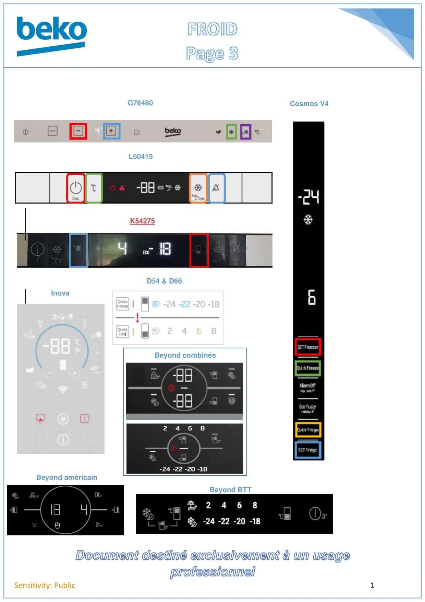

FROID3 page accueil

Document destiné exclusivement à un usage1Sensitivity: PublicCosmos V4L60415G76480K54275InovaD54 & D66Beyond combinésBeyond américainBeyond BTT
1 / 1Liens de ce document (10)
PDFProg Test Froid Electronique Beyond3 p.PDFProg Test REF Electronique Chassis G76480-G764902 p.PDFProgramme test2 p.PDFProg Test REF Cosmos V42 p.PDFProg Test electronique k54275neb2 p.PDFProg Test Froid Electronique Inova2 p.PDFCodes erreurs afficheur D54 et D661 p.PDFProg Test Gamme Froid Beyond Aff Led2 p.PDFProg Test Beyond Froid Americain3 p.PDFProg Test Froid Beyond BTT2 p.